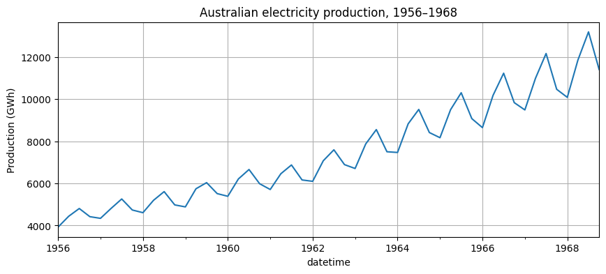
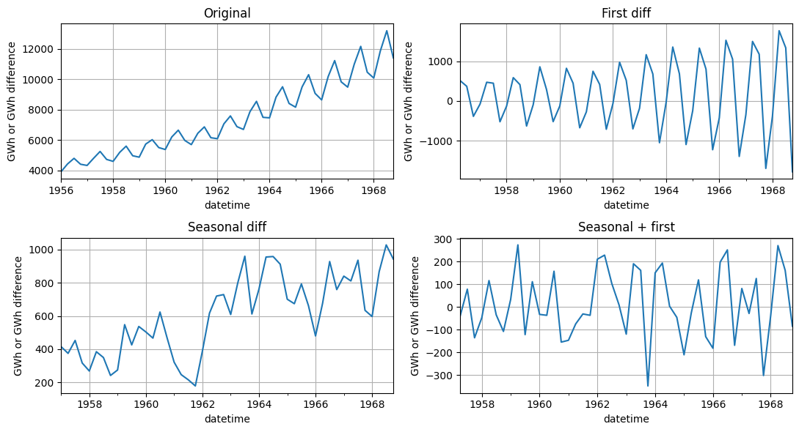
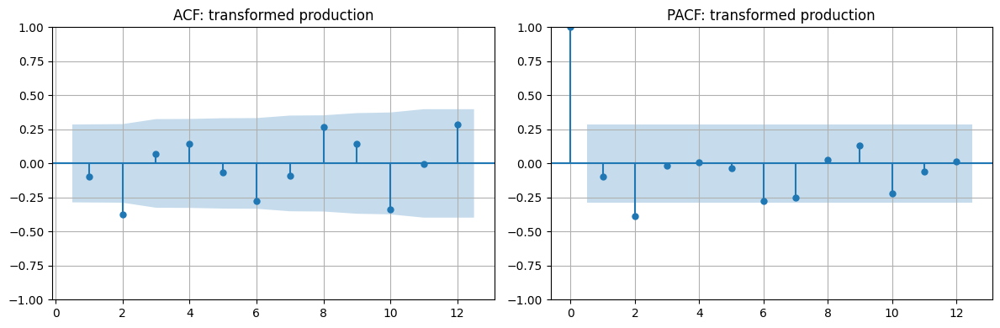
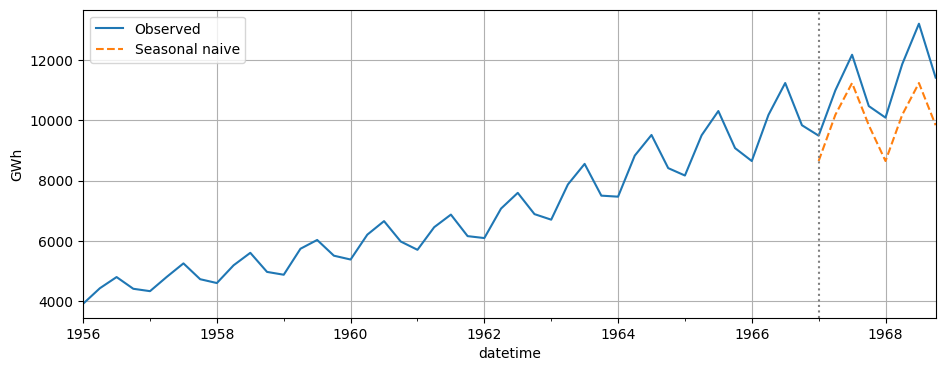
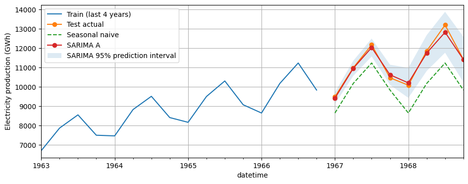
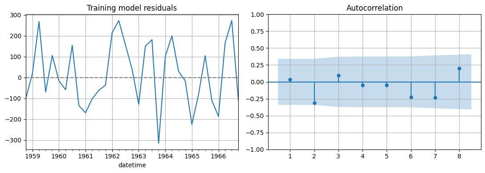

⚡ LAB: Statistical Models for Time Series#
Stationarity → ACF/PACF → SARIMA → Forecast evaluation#
By the end, you will:
explain and test stationarity (ADF);
apply first and seasonal differences to a quarterly series;
interpret ACF and PACF;
build SARIMA forecasts without using future data;
compare forecasts against a seasonal-naive baseline using MAE and NRMSE;
interpret residual autocorrelation.
# %pip -q install pandas numpy matplotlib statsmodels openpyxl
import warnings
import numpy as np
import pandas as pd
import matplotlib.pyplot as plt
from statsmodels.tsa.stattools import adfuller
from statsmodels.graphics.tsaplots import plot_acf, plot_pacf
from statsmodels.tsa.statespace.sarimax import SARIMAX
from statsmodels.stats.diagnostic import acorr_ljungbox
from statsmodels.tools.sm_exceptions import ConvergenceWarning
plt.rcParams.update({"figure.figsize": (10, 4), "axes.grid": True})
pd.set_option("display.precision", 3)
print("Ready to analyse quarterly electricity data")
Ready to analyse quarterly electricity data
1. Data Detective#
The chapter uses quarterly electricity production from Australia, recorded at the start of March, June, September and December.
Task: Complete loading and indexing. The time index must be chronologically sorted and regularly spaced. QS-MAR means a quarter beginning in March (then June, September, December).
Task 1 — Read the file and inspect the time index#
Fill the TODO lines, then check the first five observations, number of rows, date range and missing values. Do not read from a local file.
DATA_URL = "https://raw.githubusercontent.com/drmatson/energy_informatics/main/2025/data/Australia_electricty_data.xlsx"
raw = pd.read_excel(DATA_URL, index_col=False)
df = raw.rename(columns={"Unnamed: 0": "datetime", "Electricity [GWh]": "electricity"}).copy()
df["datetime"] = pd.to_datetime(df["datetime"], errors="coerce")
df["electricity"] = pd.to_numeric(df["electricity"], errors="coerce")
df = df.dropna(subset=["datetime", "electricity"])
df = df.sort_values("datetime").drop_duplicates(subset="datetime")
y = df.set_index("datetime")["electricity"].asfreq("QS-MAR")
print(y.head())
print("Observations:", len(y))
print("Period:", y.index.min(), "to", y.index.max())
print("Missing quarters:", y.isna().sum())
assert y.notna().all(), "Inspect missing quarters before modeling"
assert y.index.is_monotonic_increasing
datetime
1956-03-01 3923
1956-06-01 4436
1956-09-01 4806
1956-12-01 4418
1957-03-01 4339
Freq: QS-MAR, Name: electricity, dtype: int64
Observations: 218
Period: 1956-03-01 00:00:00 to 2010-06-01 00:00:00
Missing quarters: 0
The first values should start in March 1956, e.g. 3923, 4436, 4806, 4418 GWh. A regular quarterly index prevents forecasting with an integer-only index.
# We use the exact historical period illustrated in the chapter and lecture.
series = y.loc["1956":"1968"].copy()
assert len(series) >= 40, "The selected window should contain several years"
fig, ax = plt.subplots()
series.plot(ax=ax, title="Australian electricity production, 1956–1968")
ax.set_ylabel("Production (GWh)")
plt.show()

Question 1 (write 2–3 sentences): Describe the long-term trend, the annual seasonal pattern and whether seasonal fluctuations seem to grow with the level.
Your answer: …
Teacher guide: Rising level and recurring quarterly changes are visible; do not assume constant mean. Seasonal amplitude may increase as production rises. The ADF test below evaluates a unit-root null; it does not test all forms of stationarity.
2. Is it stationary?#
The Augmented Dickey–Fuller (ADF) test has the null hypothesis H₀: the series has a unit root. At 5% significance, a small p-value is evidence against this null. A large p-value is not proof of non-stationarity — it means we cannot reject the unit-root null.
def adf_report(x, label):
x = pd.Series(x).dropna()
statistic, pvalue, usedlag, nobs, critical, *_ = adfuller(x, autolag="AIC")
return {"series": label, "ADF statistic": statistic,
"p-value": pvalue, "lags": usedlag,
"decision @ 5%": "reject unit root" if pvalue < .05 else "cannot reject unit root"}
print(pd.DataFrame([adf_report(series, "Original")]).to_string(index=False))
series ADF statistic p-value lags decision @ 5%
Original 2.233 0.999 4 cannot reject unit root
/tmp/ipykernel_2223/1113512695.py:3: FutureWarning: adfuller currently returns a plain tuple whose length depends on the store and autolag arguments. In release 0.16 or after July 2027, whichever is later, the default behavior will switch to always returning an ADFullerResult. Set result_object=True to switch now, or result_object=False to keep the current behavior and silence this warning.
statistic, pvalue, usedlag, nobs, critical, *_ = adfuller(x, autolag="AIC")
Task 2 — Interpret ADF#
Use the provided function to test the original series, then write a one-sentence decision using p < 0.05.
p_original = adfuller(series.dropna(), autolag="AIC")[1]
print("p-value:", p_original)
print("Decision:", "Reject H0" if p_original < 0.05 else "Cannot reject H0")
p-value: 0.9989088710397297
Decision: Cannot reject H0
/tmp/ipykernel_2223/3066572925.py:1: FutureWarning: adfuller currently returns a plain tuple whose length depends on the store and autolag arguments. In release 0.16 or after July 2027, whichever is later, the default behavior will switch to always returning an ADFullerResult. Set result_object=True to switch now, or result_object=False to keep the current behavior and silence this warning.
p_original = adfuller(series.dropna(), autolag="AIC")[1]
Instructor notes / expected reasoning
For the same 1956–1968 window, the chapter reports p≈0.999, so we cannot reject a unit root in the original data.
Question 2: What is the ADF null hypothesis? Does p > 0.05 prove that the series has a unit root? Explain.
Your answer: …
3. Differencing Challenge (15 min)#
For quarterly data, one year corresponds to 4 observations.
First difference: \(y_t-y_{t-1}\)
Seasonal difference: \(y_t-y_{t-4}\)
Both: \((1-B)(1-B^4)y_t\)
The order of these two difference operators does not matter mathematically (apart from the positions of initial missing values).
Task 3 — Transform the series#
Complete each transformation. Compare plots and run ADF on every version.
first_diff = series.diff().dropna()
seasonal_diff = series.diff(4).dropna()
both_diff = series.diff(4).diff().dropna()
transforms = {"Original": series,
"First diff": first_diff,
"Seasonal diff": seasonal_diff,
"Seasonal + first": both_diff}
fig, axes = plt.subplots(2, 2, figsize=(11, 6))
for ax, (name, values) in zip(axes.flat, transforms.items()):
values.plot(ax=ax, title=name)
ax.set_ylabel("GWh or GWh difference")
plt.tight_layout()
plt.show()
adf_table = pd.DataFrame([adf_report(v, k) for k, v in transforms.items()])
print(adf_table.to_string(index=False))

series ADF statistic p-value lags decision @ 5%
Original 2.233 9.989e-01 4 cannot reject unit root
First diff -1.441 5.625e-01 3 cannot reject unit root
Seasonal diff -2.091 2.480e-01 0 cannot reject unit root
Seasonal + first -7.216 2.175e-10 1 reject unit root
/tmp/ipykernel_2223/1113512695.py:3: FutureWarning: adfuller currently returns a plain tuple whose length depends on the store and autolag arguments. In release 0.16 or after July 2027, whichever is later, the default behavior will switch to always returning an ADFullerResult. Set result_object=True to switch now, or result_object=False to keep the current behavior and silence this warning.
statistic, pvalue, usedlag, nobs, critical, *_ = adfuller(x, autolag="AIC")
/tmp/ipykernel_2223/1113512695.py:3: FutureWarning: adfuller currently returns a plain tuple whose length depends on the store and autolag arguments. In release 0.16 or after July 2027, whichever is later, the default behavior will switch to always returning an ADFullerResult. Set result_object=True to switch now, or result_object=False to keep the current behavior and silence this warning.
statistic, pvalue, usedlag, nobs, critical, *_ = adfuller(x, autolag="AIC")
/tmp/ipykernel_2223/1113512695.py:3: FutureWarning: adfuller currently returns a plain tuple whose length depends on the store and autolag arguments. In release 0.16 or after July 2027, whichever is later, the default behavior will switch to always returning an ADFullerResult. Set result_object=True to switch now, or result_object=False to keep the current behavior and silence this warning.
statistic, pvalue, usedlag, nobs, critical, *_ = adfuller(x, autolag="AIC")
/tmp/ipykernel_2223/1113512695.py:3: FutureWarning: adfuller currently returns a plain tuple whose length depends on the store and autolag arguments. In release 0.16 or after July 2027, whichever is later, the default behavior will switch to always returning an ADFullerResult. Set result_object=True to switch now, or result_object=False to keep the current behavior and silence this warning.
statistic, pvalue, usedlag, nobs, critical, *_ = adfuller(x, autolag="AIC")
The original series is not stationary in the unit-root sense according to ADF. Compare seasonal differencing with adding first differencing; the 1956–1968 example in the chapter gives ADF p≈0 after both differences. Caution: ADF rejection does not establish constant variance.
Question 3: Which transformation is the simplest plausible choice for this series? Give the ADF p-value and one visual argument. What is lost when applying diff(4).diff()?
Your answer: …
4. ACF/PACF Detective#
ACF measures total autocorrelation at each lag. PACF measures the correlation after accounting for the intermediate lags. Use them on the transformed series. The ACF of trending original data can be dominated by non-stationarity.
For quarterly data, look at lags 4, 8 and 12 (whole years). ACF/PACF suggest candidate orders; they do not uniquely identify a SARIMA model.
Task 4 — Draw ACF and PACF#
Fill both plot commands. Exclude lag zero from ACF to focus on informative lags.
signal = both_diff
fig, axes = plt.subplots(1, 2, figsize=(12, 4))
plot_acf(signal, lags=12, zero=False, ax=axes[0])
plot_pacf(signal, lags=12, method="ywm", ax=axes[1])
axes[0].set_title("ACF: transformed production")
axes[1].set_title("PACF: transformed production")
plt.tight_layout()
plt.show()
lag4_corr = series.autocorr(lag=4)
print("Original lag-4 autocorrelation:", round(lag4_corr, 3))

Original lag-4 autocorrelation: 0.998
The raw lag-4 ACF reflects both trend and seasonality; it is not definitive proof of a seasonal causal mechanism. An AR cutoff is often reflected in PACF, MA in ACF, but seasonal and finite-sample cases can be ambiguous.
Question 4: Identify two lags worth investigating. Does the transformed series still show seasonal autocorrelation? Suggest one small non-seasonal \((p,q)\) pair for ARIMA and justify it.
Your answer: …
Optional interactive exploration#
In JupyterLab/Colab, use the dropdown to compare ACF and PACF. This cell is optional; if widgets are missing, the static plots above are sufficient. Widgets are not required for a static Jupyter Book page.
try:
from ipywidgets import interact, Dropdown, IntSlider
def show_lags(transformation="Seasonal + first", n_lags=12):
data = transforms[transformation]
n_lags = min(n_lags, (len(data) - 1) // 2)
fig, axs = plt.subplots(1, 2, figsize=(11, 3))
plot_acf(data, lags=n_lags, zero=False, ax=axs[0])
plot_pacf(data, lags=n_lags, method="ywm", ax=axs[1])
axs[0].set_title(transformation + " | ACF")
axs[1].set_title(transformation + " | PACF")
plt.tight_layout()
plt.show()
interact(show_lags,
transformation=Dropdown(options=list(transforms), value="Seasonal + first"),
n_lags=IntSlider(value=12, min=4, max=16, step=4))
except ImportError:
print("Optional widgets unavailable. Static ACF/PACF plots above are enough.")
5. Forecasting without leakage#
Keep the last 8 quarters (2 years) unseen. Models and any parameter choices should use only the training sample. For a fair baseline, a Seasonal Naive forecast repeats the last four observed quarters (one year) into the future.
Important: We fit SARIMA directly to the original GWh series with differencing inside the model. Do not manually difference the whole dataset and then fit d=1, D=1 again.
Task 5 — Time-aware train/test split#
Complete the chronological split and the seasonal-naive baseline. Check both values and timestamps.
train = series.iloc[:-8]
test = series.iloc[-8:]
seasonal_naive = pd.Series(
np.resize(train.iloc[-4:].to_numpy(), len(test)),
index=test.index, name="Seasonal naive"
)
print("Train:", train.index[0], "to", train.index[-1], "| n=", len(train))
print("Test:", test.index[0], "to", test.index[-1], "| n=", len(test))
assert len(test) == 8
assert train.index.max() < test.index.min()
assert seasonal_naive.index.equals(test.index)
ax = series.plot(label="Observed", figsize=(11, 4))
seasonal_naive.plot(ax=ax, label="Seasonal naive", linestyle="--")
ax.axvline(test.index[0], linestyle=":", color="grey")
ax.set_ylabel("GWh")
ax.legend()
plt.show()
Train: 1956-03-01 00:00:00 to 1966-12-01 00:00:00 | n= 44
Test: 1967-03-01 00:00:00 to 1968-12-01 00:00:00 | n= 8

No shuffled split. Train observations should run through 1966 Q4; test should be 1967–1968. Seasonal naive uses only observations available at the forecast origin.
Question 5: Why is train_test_split(..., shuffle=True) unsuitable for this task? Does the seasonal-naive baseline use any observations from the test period?
Your answer: …
6. SARIMA competition#
SARIMA notation: \((p,d,q)\times(P,D,Q)_4\). Fit two small candidates on train, compare training AIC, choose the lower-AIC model before examining test errors and forecast the entire 8-quarter holdout.
Model A: SARIMA(0,1,1) × (0,1,1)₄
Model B: SARIMA(1,1,0) × (1,1,0)₄
The seasonal period is 4. AIC compares fitted candidate models on the same training data; a lower AIC does not guarantee a better out-of-sample forecast.
Task 6 — Fit SARIMA and forecast#
Fill the model constructor and the forecasting call. Model B is deliberately different from A. Inspect convergence and training AIC.
candidate_orders = {
"SARIMA A": ((0, 1, 1), (0, 1, 1, 4)),
"SARIMA B": ((1, 1, 0), (1, 1, 0, 4)),
}
fits = {}
for name, (order, seasonal_order) in candidate_orders.items():
model = SARIMAX(train, order=order, seasonal_order=seasonal_order,
trend="n", enforce_stationarity=False,
enforce_invertibility=False)
with warnings.catch_warnings(record=True) as caught:
warnings.simplefilter("always", ConvergenceWarning)
result = model.fit(disp=False, maxiter=200)
fits[name] = result
converged = result.mle_retvals.get("converged", True)
print(f"{name} | AIC={result.aic:.1f} | converged={converged}")
best_name = min(fits, key=lambda name: fits[name].aic)
best_fit = fits[best_name]
forecast_result = best_fit.get_forecast(steps=len(test))
forecast = pd.Series(forecast_result.predicted_mean.to_numpy(),
index=test.index, name=best_name)
interval = forecast_result.conf_int(alpha=0.05)
print("Selected on train AIC:", best_name)
print(forecast.head())
SARIMA A | AIC=432.2 | converged=True
SARIMA B | AIC=444.4 | converged=True
Selected on train AIC: SARIMA A
datetime
1967-03-01 9417.414
1967-06-01 10961.597
1967-09-01 12032.809
1967-12-01 10623.467
1968-03-01 10206.315
Freq: QS-MAR, Name: SARIMA A, dtype: float64
# Plot GWh levels (not differenced values)
fig, ax = plt.subplots(figsize=(11, 4))
train.iloc[-16:].plot(ax=ax, label="Train (last 4 years)")
test.plot(ax=ax, marker="o", label="Test actual")
seasonal_naive.plot(ax=ax, linestyle="--", label="Seasonal naive")
forecast.plot(ax=ax, marker="o", label=best_name)
ax.fill_between(test.index, interval.iloc[:, 0].to_numpy(),
interval.iloc[:, 1].to_numpy(), alpha=0.15,
label="SARIMA 95% prediction interval")
ax.set_ylabel("Electricity production (GWh)")
ax.legend()
plt.show()

7. Who forecasts better? (5 min)#
Use MAE and NRMSE. Here we explicitly define:
\(\mathrm{NRMSE} (\%) = 100 \times \frac{\sqrt{\mathrm{mean}((y-\hat y)^2)}}{\mathrm{mean}(y_{test})}\)
This normalization uses the mean observed test value for reporting. Since electricity production is positive, the denominator is nonzero. A lower error is better.
Task 7 — Compute the two metrics#
Finish the metric function and compare the seasonal-naive forecast with SARIMA. Do not rank the models using training AIC here.
def evaluate(truth, prediction):
truth = np.asarray(truth, dtype=float)
prediction = np.asarray(prediction, dtype=float)
mae = np.mean(np.abs(truth - prediction))
rmse = np.sqrt(np.mean((truth - prediction) ** 2))
nrmse_pct = 100 * rmse / np.mean(truth)
return {"MAE (GWh)": mae, "NRMSE (%)": nrmse_pct}
assert test.index.equals(seasonal_naive.index)
assert test.index.equals(forecast.index)
scoreboard = pd.DataFrame({
"Seasonal naive": evaluate(test, seasonal_naive),
best_name: evaluate(test, forecast)
}).T
print(scoreboard.round(2).to_string())
print("Lowest test NRMSE:", scoreboard["NRMSE (%)"].idxmin())
MAE (GWh) NRMSE (%)
Seasonal naive 1234.62 11.74
SARIMA A 124.55 1.47
Lowest test NRMSE: SARIMA A
Instructor notes / expected reasoning
AIC and NRMSE answer different questions: AIC measures penalized in-sample fit; NRMSE measures out-of-sample forecast error on held-out original GWh observations. A more complex model may underperform the simple baseline.
Question 6: Which method has the smaller test NRMSE? Is it necessarily the one with the smaller AIC? How large is the improvement (or deterioration) in percentage points?
Your answer: …
8. Residuals: is there still a pattern?#
A satisfactory residual series should show no important remaining autocorrelation. A p-value above 0.05 in the Ljung–Box test means insufficient evidence against residual independence at the tested lags, not proof of perfect white noise.
Do not confuse model residuals with test forecast errors: residual diagnostics here are evaluated on training data.
Task 8 — Diagnose the fitted model#
Plot training residuals and their ACF. Use Ljung–Box at lag 8; skip initialization observations which can distort the diagnostic.
burn = max(6, best_fit.loglikelihood_burn)
residuals = best_fit.resid.iloc[burn:].dropna()
fig, axes = plt.subplots(1, 2, figsize=(11, 4))
residuals.plot(ax=axes[0], title="Training model residuals")
axes[0].axhline(0, color="grey", linestyle="--")
plot_acf(residuals, lags=8, zero=False, ax=axes[1])
plt.tight_layout()
plt.show()
lb = acorr_ljungbox(residuals, lags=[8], return_df=True)
print(lb)

lb_stat lb_pvalue
8 10.55 0.229
If Ljung–Box is significant, consider remaining lags or model misspecification; if insignificant, avoid interpreting this as a guarantee of independent errors or best possible forecast accuracy.
Question 7: Are the residuals approximately structureless? Mention the ACF and Ljung–Box p-value. Would you deploy the model based on this 8-quarter test alone? Why or why not?
Your answer: …
Optional extension#
Try one more low-order SARIMA candidate, e.g. \((1,1,1)\times(0,1,1)_4\). Compare training AIC and residual diagnostics, then evaluate the test forecast only once you have made a model choice. Avoid tuning repeatedly on this single test period: that is another form of leakage.
# OPTIONAL EXPERIMENT: run only after explaining your original choice.
# order = (1, 1, 1)
# seasonal_order = (0, 1, 1, 4)
# trial = SARIMAX(train, order=order, seasonal_order=seasonal_order,
# trend="n", enforce_stationarity=False,
# enforce_invertibility=False).fit(disp=False)
# print("Trial train AIC:", trial.aic)